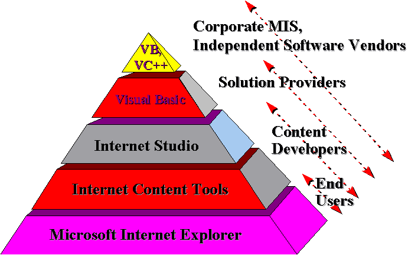
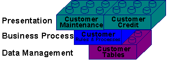

|
| ||
|
| ||
James Utzschneider
Product Manager, Microsoft Developer Division
December 1995
This is a very interesting time to be writing software for a living.
The growth of the World Wide Web is leading the industry to rethink how it builds, markets, and supports software products. Excitement is in the air. The potential for applet software, $500 Internet terminals, and seamless connections to virtually any server in the world present enormous opportunity for programmers who want to get a leg up on the next big thing.
The Web also presents enormous risk, as does any period of rapid market and technology change. How does the professional developer navigate the time period from when the technology appears on a Business Week cover to when you have paying customers and a backlog of billable work based on the trend?
Before you download a Beta 1.0 release of Java and begin planning your new career writing Web software, you should probably think through the following issues:
What business or career opportunity does the Internet present for me?
The Internet is changing the way people use computers. That's the easy part. The difficult part is figuring out how to make a living writing software for the Internet. Do I write Web pages? Deploy Intranets? Games? Commercial applets that users download and rent from me? There are 40 million PCs deployed today, and even if a market for cheap Internet terminals takes off someday, most programmers making a living on the Internet over the next three years will do so by writing for the installed base of PCs connected to corporate networks.
How do I compete in the Internet market?
The technology companies receiving the lion's share of Internet media attention--including Sun Microsystems, Microsoft, Oracle, and Netscape--plan to make their money on the Internet by selling existing products and technologies that they have adapted for the new market. Sun will sell server hardware, Oracle will sell server databases, and Netscape will sell their engineers' experience designing Mosaic. As a developer, this should be your strategy, too. How can you "Internet-enable" your existing skills and products, just like the big companies?
The Internet increases the need for software quality, but where are the tools?
One vision of the Internet-enabled future involves users simply downloading software applets when needed. If the software doesn't work properly, no big problem. The user will simply download a new applet from someone else. Everyone wins, except the developer of the original applet. How are you going to make sure that you won't be in this position? The potential for global exposure to your product increases the need for making sure that your software works properly, even when scripted into applications and environments that are difficult to anticipate. Until a new generation of test and development tools evolve, you should probably use the tools you have today.
It's difficult to sort through the Internet hype to find clear answers to these basic issues. What's your market? How will you compete? How will you test and deploy your code?
Microsoft's strategy for Internet development is simple: Make the millions of developers who are successful on PCs today become successful on the Internet today . This paper outlines how we plan to do it.
Most people use the Web today for browsing published documents (reading things), but the real commercial opportunity for developers will emerge when the market evolves to a richer set of Web applications based around business processes (doing things) and selling goods and services (buying things). Developers who can lead the market in integrating these services into existing corporate networks will succeed.
The best way for a developer to beat the market to this transition is to follow the mantra of corporate IT departments in the 1990s: Buy before you build, and adapt what you buy. Companies are moving away from writing code in-house, and the Internet will not stop this trend . Few business customers want developers to come in and start building new, whiz-bang Web applications from scratch using beta tools downloaded from the net. If you sell and support existing applications, don't rewrite them or throw them out. Internet-enable them.
The best way to do this is to extend your client/server applications to support Internet standards. Microsoft has extended its own development tools and platforms to make this possible. Microsoft products are Internet protocol-compliant. We are embracing existing and de-facto Internet standards. And we are investing heavily in areas where standards do not yet exist.
While most of the press is covering Internet technology developments on the client side--Java, applets, browsers--the real action during this market transition is going to take place on the server. Why? Because Internet applications, even downloadable applet applications, are intrinsically client/server applications. If the industry has learned anything over the last five years, it's that how you build the server determines the success of a client/server installation. The market bears this out, for companies selling server products--HP, Sybase, Oracle, and Microsoft--have been the most successful in the industry during this time period.
Microsoft's strategy is to encourage developers to plan complete Internet solutions, that is, those that integrate with existing systems. ISAPI, Win32®, and OLE are some of Microsoft's technologies for doing this.
Microsoft has a spectrum of tools today that meet the different requirements of developers building Internet-enabled applications.
Internet Tools Environment

Business application developers--the millions of programmers earning a living today at enterprises, ISVs, and Solution Providers building client/server applications--can use Visual C++  , Visual Basic
, Visual Basic  , or any other member of Microsoft's Visual Tools family to Internet-enable existing applications. These applications can use ISAPI or OLE Controls to support HTTP, HTML, and most of the standard Internet protocols. To end users on the Web, these applications look
exactly
like applications built from scratch using Internet-specific tools.
, or any other member of Microsoft's Visual Tools family to Internet-enable existing applications. These applications can use ISAPI or OLE Controls to support HTTP, HTML, and most of the standard Internet protocols. To end users on the Web, these applications look
exactly
like applications built from scratch using Internet-specific tools.
Developers creating Internet content can use SoftImage 3-D or lay out Web pages with Visual InterDev™  (previously code-named "Internet Studio").
(previously code-named "Internet Studio").
Microsoft's Visual Basic  family of development tools scales the needs of enterprise
and
Internet application development
family of development tools scales the needs of enterprise
and
Internet application development
A subset of Visual Basic--called Visual Basic Script--is used by Microsoft's browser to create active HTML applications. This safe, cross-platform implementation of the language will be available to other browser vendors who license Microsoft's browser technology.
Visual Basic for Applications (VBA) is Microsoft's cross-platform scripting technology, currently available in Microsoft Office applications on Windows® and the Macintosh®.
Microsoft Visual Basic is a scalable environment for building Internet business applications. Over one million developers use Visual Basic, and Visual Basic 4.0 supports the creation of OLE components that can be deployed across the Internet.
It takes more than just support for Internet protocol technology to build great Internet-enabled applications. Developers need to understand the importance of architecture.
The emerging market for Internet developers--the market where developers plan to make money--is to support the vast number of businesses that want to use the Web to provide better service to existing customers and to target new customers with finely-tuned offers and products. These businesses need applications that are extremely flexible--easily changed, reconfigured, and updated as the market changes--while providing users with a great Internet experience. Conventional wisdom shows that the best way to achieve this is through a multi-tier application architecture.
Multi-tier Architecture Using Component Software

Multi-tier architectures simplify the complexity of designing and deploying business applications across the Internet. A well-designed multi-tier application partitions software dependencies to make it easier for developers to change and adapt their programs. Client presentation services, business process rules, and data management services are separated from one another. Developers can change business rules--say, how to calculate sales tax--without having to touch the code for customer credit or customer data. Developers can update servers without having to update clients, browsers, or databases.
It makes business sense for the developer to use a common set of programming tools and software components for the multiple tiers within an application . Why? Because "multi-tier" refers to software architecture, not hardware configuration. Developers who build business rules and data tables for only a server environment prevent themselves from selling software to mobile workers who may need to use local copies of an application. Programmers who build business rules in a lightweight applet language may deny themselves the opportunity to sell large (profitable) servers shared by hundreds of concurrent users. Some users will always want their personal data on their personal computer.
Life is too short to learn a separate set of programming skills--not to mention buying/downloading/learning a separate suite of development tools--for each tier within a multi-tier environment.
The Microsoft Windows/Windows NT™ environment is the best platform and technology for three-tier applications, especially on the Internet. The same Win32 APIs work on the client and the server. Developers can build, test, and debug an entire application on one machine and deploy it across the network.
Developers can easily build multi-tier Internet applications using component and applet software. Components are software programs that share a common interface, allowing for a high degree of reuse and integration, even among software written from multiple sources. Component software is one of the most exciting developments on the Internet.
Developers have a choice in the component model they use for building multi-tier applications.
Microsoft's Component Object Model (COM) is the best foundation today for professional developers building Internet business applications. OLE components using COM are already running on 35 million desktop computers, including most of the desktop systems connected to the Web. Looking for existing applications to quickly Internet-enable? Over 1,000 commercial applications support OLE. Looking for Internet components to make this enabling easier? Dozens of software companies--ranging from Oracle to NetManage--are already shipping Internet OLE components
OLE is a binary standard that is language and operating-system neutral. Developers can build OLE components in Visual Basic, C++--even MicroFocus has announced plans to support the creation of OLE components in COBOL! OLE components can run today on Windows, Windows NT, and the Macintosh.
The Internet is a cross-platform environment, and Microsoft is working with partners to ship versions of OLE that run on UNIX® implementations (including LINUX) and mainframes. Microsoft has other projects under development to extend OLE in this market, including the OLE Transactions technology for easily building scalable Internet business servers with components.
Where can developers go to get more information and some help in Internet-enabling their applications. The Web, of course!
Microsoft's new Internet Development Toolbox Web site (http://www.microsoft.com/workshop/prog) contains a one-stop warehouse of information on Microsoft's technology, tools, and strategy for Internet development. Developers can download beta copies of our latest software from the site. The Microsoft Developer Network  (MSDN) provides different levels of reference materials, SDKs, and Internet products.
(MSDN) provides different levels of reference materials, SDKs, and Internet products.
Did you find this material useful? Gripes? Compliments? Suggestions for other articles? Write us!
© 1999 Microsoft Corporation. All rights reserved. Terms of use.